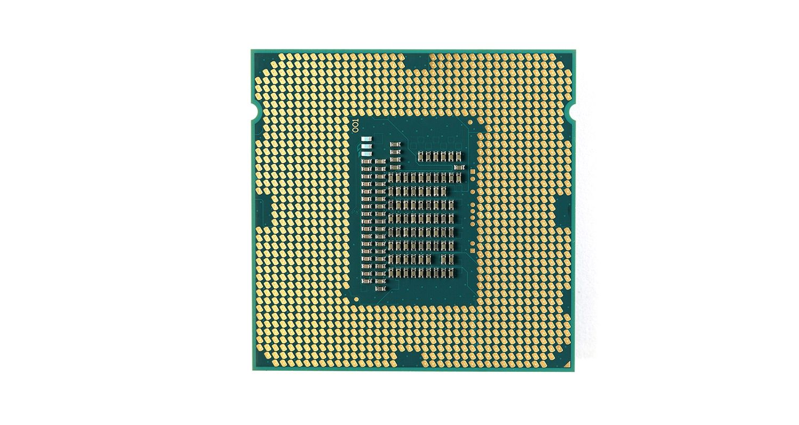

kgarcia.scl
Procesadores
Presentaciones
Hojas de calculo
Componentes PC
Componentes del computador y sus capacidades
Una computadora es un sistema informático compuesto por dos aspectos básicos: el hardware, que significa “soporte físico”, y el software, que se refiere a lo intangible o el “programa”. Los soportes físicos son elementos electrónicos que trabajan conectados para proporcionar datos, y esos datos son procesados gracias a las instrucciones que proporcionan los programas. El hardware es como una caja en la que se conectan una serie de dispositivos que procesan información de entrada y de salida. El software es el conjunto de instrucciones para ejecutar esa información de entrada y salida. Sin las instrucciones del software, la computadora sería una caja sin utilidad, al igual que lo sería el cuerpo humano sin un cerebro. Para armar una computadora de escritorio, se necesitan varios componentes. Algunos son imprescindibles para su funcionamiento: gabinete, fuente de alimentación, placa madre, memoria RAM, disco rígido mecánico o en estado sólido, microprocesador, cooler CPU, conectores, cables y puertos.
|  | 01 | 06 | |
|
CPU Es una maquinaria electrónica que ejecuta instrucciones de programas que permiten que una computadora u otro dispositivo realice sus tareas . |
RAM Es la memoria a corto plazo de un ordenador, donde se almacenan los datos que el procesador está utilizando en ese momento. |
||
| 02 |  |
07 | |
|
Placa Madre Es la principal placa de circuito impreso en computadoras de propósito general y otros sistemas expandibles. |
Tarjeta de Graficos Es una tarjeta de expansión de computadora que genera una fuente de salida de gráficos a un dispositivo de visualización, como un monitor. |
||
| 03 | 08 | ||
Unidad Óptica Es una unidad de disco que utiliza luz láser u ondas electromagnéticas dentro o cerca del espectro de luz visible. |
Puerto USB Es un estándar de la industria que establece especificaciones para cables, conectores y protocolos para conexión, comunicación y suministro de energía entre computadoras. |
||
| 04 | 09 | ||
Disco Duro Es una unidad de hardware que se usa para almacenar contenido y datos digitales en las computadoras. |
Fuente de Poder Sirven para brindar el suministro de energía a cada componente del sistema , por lo que no solo alimenta a la tarjeta madre, sino que también le suministra energía a los otros dispositivos complementarios. |
||
| 05 | 10 | ||
Tarjeta de audio Es una tarjeta de expansión interna que proporciona entrada y salida de señales de audio hacia y desde una computadora bajo el control de programas de computadora. |
Gabinete Es el recinto que contiene la mayor parte del hardware de una computadora personal. |